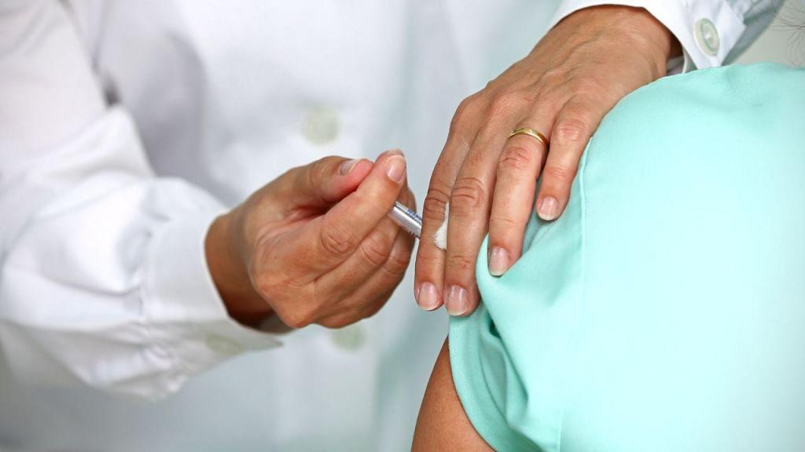

A USF Pombal, promove a toma da vacina de forma diferente
Noticia promulgada a Novembro de 2020
Neste período de vacinação contra a gripe, a USF de Pombal, pretende fazer uma sondagem e perceber que pessoas com mais de 65 anos, têm mais dificuldade em se deslocar a unidade de saúde, tendo como objetivo, de se deslocar às casas destas pessoas, para a toma da vacina. A unidade já tomou providências quanto a este projeto e decidiu contratar, mais de 20 enfermeiros em regime sazonal.
4º Semana da saúde
A decorrer entre os dias 1 a 7 de Fevereiro de 2021
O Centro de saúde de Pombal, promove de 1 a 7 de Fevereiro a 4ª Semana da saúde, destinada a toda a população do concelho. Esta semana promete abordar alguns assuntos tais como:
- Saúde Alimentar
- Atividade Física
- Hábitos saudáveis
- Vacinação
- Pandemia COVID-19